Definizione - Rete sequenziale
Una rete logica si definisce sequenziale se l'uscita non dipende unicamente dagli ingressi correnti, ma dipende anche dalla storia passata e/o dallo scorrere del tempo. Ciò significa che in presenza di una stessa configurazione di ingressi si possono avere più uscite differenti.
Dato che l'uscita non dipende solo dagli ingressi, è necessario tener conto di un'altra informazione: lo "stato interno". Per questo, ogni volta che cambiano gli ingressi, la rete, oltre a determinare il valore dell'uscita, dovrà calcolare anche lo stato interno (deve calcolare lo "stato futuro" e sovrascriverlo allo stato presente).
Per tenere traccia di questa informazione è necessario utilizzare una memoria.
Dato che l'uscita non dipende solo dagli ingressi, è necessario tener conto di un'altra informazione: lo "stato interno". Per questo, ogni volta che cambiano gli ingressi, la rete, oltre a determinare il valore dell'uscita, dovrà calcolare anche lo stato interno (deve calcolare lo "stato futuro" e sovrascriverlo allo stato presente).
Per tenere traccia di questa informazione è necessario utilizzare una memoria.
Definizione - Rete sequenziale asincrona (RSA)
Una rete sequenziale asincrona è una rete sequenziale in cui lo stato presente è sovrascritto non appena lo stato futuro è calcolato.
In una RSA quindi, ad ogni istante, sono calcolati:
In una RSA quindi, ad ogni istante, sono calcolati:
- \( m\) segnali di uscita della rete;
- \( k\) segnali di stato futuro.
- \( n\) segnali di ingresso;
- \( k\) segnali di stato presente.
Definizione - Memoria in una RSA
Sappiamo che ogni gate reale ha un ritardo di propagazione \( \tau_{p}\): ogni rete è quindi caratterizzata da un segnale ideale che cambia istantaneamente al variare degli ingressi, ed un segnale reale, soggetto al ritardo.
Tale ritardo può tuttavia essere visto come memoria del passato e può essere sfruttato collegando i gate in retroazione. Si ha quindi che ogni anello di retroazione fornisce un bit di memoria e, per questo motivo, si ha che una rete con \( k\) bit di stato ha \( k\) anelli di retroazione.
Tale ritardo può tuttavia essere visto come memoria del passato e può essere sfruttato collegando i gate in retroazione.
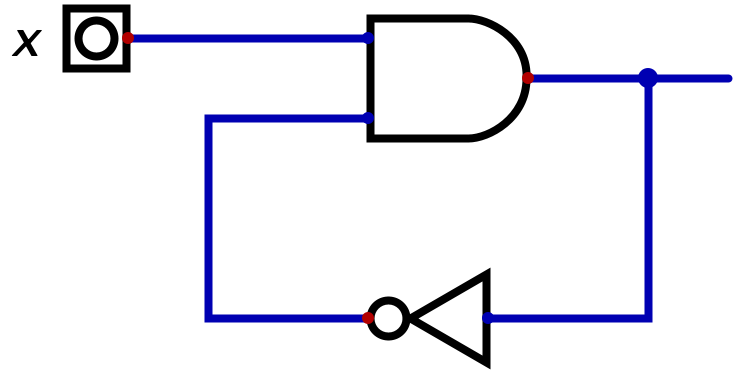
Definizione - RSA come Finite State Machine (FSM)
Una RSA è quindi un caso particolare di automa (o macchina a stati finiti), ovvero un sistema matematico caratterizzato da:
- un insieme \( I\) detto alfabeto di ingresso;
- un insieme \( U\) detto alfabeto di uscita;
- un insieme \( S\) degli stati;
- una funzione \( F: S \times I \to U\) di uscita;
- una funzione \( G: S \times I \to S\) di aggiornamento dello stato interno.
- l'automa di Mealy, in cui l'uscita dipende dallo stato interno e dagli ingressi
- l'automa di Moore, in cui l'uscita dipende solo dallo stato interno.
Definizione - Comportamento di una RSA
Per poter descrivere il comportamento di una RSA non è sufficiente utilizzare una tabella della verità, ma è necessario ricorrere a formalismi come:
- il grafo degli stati;
- la tabella di flusso.
Definizione - Grafo degli stati - Automa di Mealy
Il grafo degli stati è un grafo ad archi orientato dove: Per rendere più comprensibili tali grafi, si utilizza anche una tabella in cui sono associati gli identificatori degli stati (\( A, B, C, D\)) a delle descrizioni, ovvero  Un grafo, per essere completo, deve prevedere che da ogni nodo escano tanti rami quante sono le configurazioni binarie possibili degli ingressi.
Un grafo, per essere completo, deve prevedere che da ogni nodo escano tanti rami quante sono le configurazioni binarie possibili degli ingressi.
Un nodo che prevede almeno un arco che ritorna su di esso è definito stato stabile.
Un arco proveniente da uno stato in cui l'uscita è diversa da quella dello stato di arrivo (ovvero quando l'uscita cambia) può prevedere come uscita anche il valore di indifferenza ("\( -\)") in quanto non è importante che il valore si modifichi qualche istante prima o dopo. Ciò non può tuttavia avvenire se l'uscita rimane invariata, in quanto causerebbe un "glitch".
Affinchè una RSA funzioni con continuità, il grafo degli stati deve:
- ogni nodo rappresenta uno stato;
- ogni arco rappresenta una transizione da stato presente a stato futuro in corrispondenza di una o più configurazioni di ingresso;
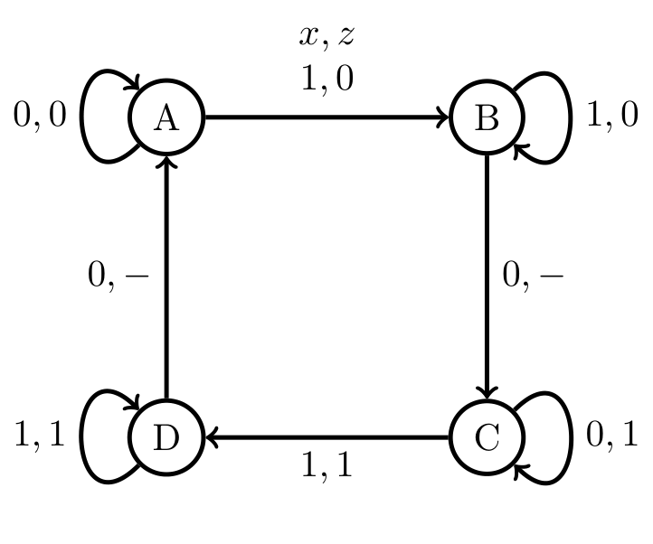
Un nodo che prevede almeno un arco che ritorna su di esso è definito stato stabile.
Un arco proveniente da uno stato in cui l'uscita è diversa da quella dello stato di arrivo (ovvero quando l'uscita cambia) può prevedere come uscita anche il valore di indifferenza ("\( -\)") in quanto non è importante che il valore si modifichi qualche istante prima o dopo. Ciò non può tuttavia avvenire se l'uscita rimane invariata, in quanto causerebbe un "glitch".
Affinchè una RSA funzioni con continuità, il grafo degli stati deve:
- essere strettamente connesso, ovvero deve esistere sempre almeno un percorso per passare da un qualsiasi nodo all'altro.
- non contenere nodi irraggiungibili (o parti di grafo), ovvero dotati di sole frecce uscenti;
- non contenere nodi assorbenti (o parti di grafo), ovvero dotati di sole frecce entranti.
Definizione - Grafo degli stati - Automa di Moore
Nel caso si stia descrivendo un automa di Moore (ovvero una macchina a stati a finiti in cui la funzione di uscita dipende solo dallo stato presente e non dagli ingressi), il grafo degli stati prevede che in ogni nodo sia riportata anche l'uscita (e non sopra agli archi), ovvero 
Esempio - Descrivere il comportamento di una RSA con un grafo a stati - Lampada da tavolo
Una lampada da tavolo (del tipo in cui la lampadina si accende al rilascio di un pulsante se è accesa e si spegne nel caso sia spenta) è una rete sequenziale asincrona.
Per disegnare il grafo degli stati teniamo presente che: In questa situazione, l'unica cosa che è possibile fare è premere il pulsante, andando in un nuovo stato, ovvero Nello stato "A" si possono quindi verificare due eventi: A questo punto è possibile che: che può essere rappresentato come Iterando questo processo, si può arrivare ad ottenere il seguente grafo
In questa situazione, l'unica cosa che è possibile fare è premere il pulsante, andando in un nuovo stato, ovvero Nello stato "A" si possono quindi verificare due eventi: A questo punto è possibile che: che può essere rappresentato come Iterando questo processo, si può arrivare ad ottenere il seguente grafo 
 È possibile però notare che lo stato "E" e lo stato "A" coincidono, ed è quindi possibile eliminare lo stato "E" ottenendo il seguente grafo degli stati:
È possibile però notare che lo stato "E" e lo stato "A" coincidono, ed è quindi possibile eliminare lo stato "E" ottenendo il seguente grafo degli stati: 
 Infine, è possibile notare che nei collegamenti "B-C" e "D-A" l'uscita cambia ed è quindi possibile aggiungere un'indifferenza sull'uscita
Infine, è possibile notare che nei collegamenti "B-C" e "D-A" l'uscita cambia ed è quindi possibile aggiungere un'indifferenza sull'uscita 
Per disegnare il grafo degli stati teniamo presente che:
- si ha un ingresso \( x\) associato al pulsante: se tale pulsante è premuto l'uscita assume valore \( 1\), altrimenti ha valore \( 0\);
- si ha un'uscita \( z\) associata allo stato della lampadina: al valore \( 0\) corrisponde la luce spenta, al valore \( 1\) la luce accesa.
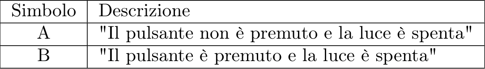
- il pulsante rimane non premuto (ovvero si ha "stabilità");
- il pulsante viene premuto (ovvero si transita verso lo stato successivo).
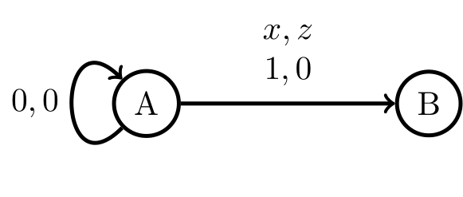
- il pulsante rimanga premuto (ovvero si ha "stabilità");
- il pulsante viene rilasciato (ovvero si transita verso lo stato successivo) e la luce si accende.
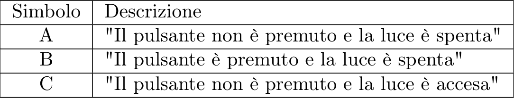
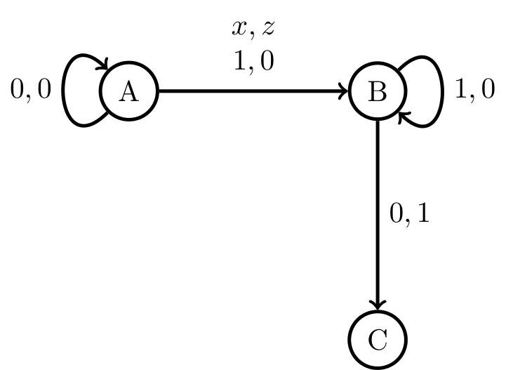
Definizione - Stato iniziale (o reset)
Nelle macchine elettroniche non è possibile prevedere il valore dei segnali in retroazione all'accensione: non è possibile quindi avere certezza sullo stato iniziale (e ciò potrebbe determinare un problema).
Tipicamente si utilizza quindi un ingresso aggiuntivo per la rete (detto ingresso di reset) che segnala quando la macchina si sta accendendo. Esso, infatti, assume il valore \( 1\) solo nei primi istanti di funzionamento (e \( 0\) per il tempo restante).
Per ottenere quindi un bit di stato iniziale con valore \( 0\), lo si collega (con l'ingresso di reset negato) nel seguente modo: in questo modo si ha che per i primi istanti di funzionamento esso assumerà valore \( 0\) andando a "bloccare" l'AND che sarà costretto all'uscita \( 0\). Successivamente, l'ingresso di reset avrà valore \( 1\) diventando quindi neutro per l'AND.
in questo modo si ha che per i primi istanti di funzionamento esso assumerà valore \( 0\) andando a "bloccare" l'AND che sarà costretto all'uscita \( 0\). Successivamente, l'ingresso di reset avrà valore \( 1\) diventando quindi neutro per l'AND.
Similmente, è possibile ottenere come bit di stato iniziale il valore \( 1\) collegando l'ingresso di reset (questa volta non negato) nel seguente modo: si ottiene quindi che per i primi istanti il gate OR è costretto all'uscita \( 1\) mentre successivamente assume un comportamento di trasparenza.
si ottiene quindi che per i primi istanti il gate OR è costretto all'uscita \( 1\) mentre successivamente assume un comportamento di trasparenza.
Tipicamente si utilizza quindi un ingresso aggiuntivo per la rete (detto ingresso di reset) che segnala quando la macchina si sta accendendo. Esso, infatti, assume il valore \( 1\) solo nei primi istanti di funzionamento (e \( 0\) per il tempo restante).
Per ottenere quindi un bit di stato iniziale con valore \( 0\), lo si collega (con l'ingresso di reset negato) nel seguente modo:
Similmente, è possibile ottenere come bit di stato iniziale il valore \( 1\) collegando l'ingresso di reset (questa volta non negato) nel seguente modo:
Definizione - Tabella di flusso - Automa di Mealy
In aggiunta al grafo degli stati, è possibile descrivere il comportamento di una RSA attraverso una tabella di flusso:  dove \( s^{*}\) è lo stato futuro e \( z\) è l'uscita.
dove \( s^{*}\) è lo stato futuro e \( z\) è l'uscita.
Un esempio reale potrebbe essere il seguente: Nelle tabelle di flusso, le celle cerchiate indicano condizioni di stabilità.
È possibile controllare la correttezza formale della rete analizzando la tabella. Si deve avere infatti che:
Un esempio reale potrebbe essere il seguente:
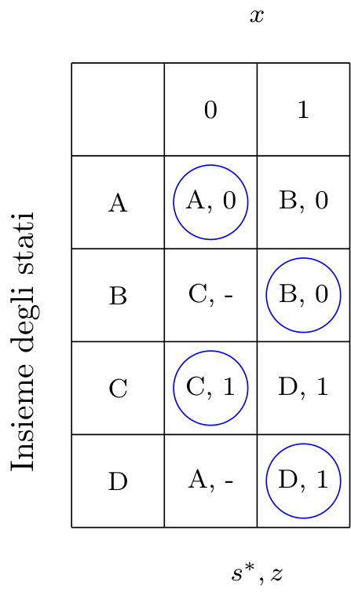
È possibile controllare la correttezza formale della rete analizzando la tabella. Si deve avere infatti che:
- ogni riga deve avere almeno una condizione di stabilità;
- ogni cella instabile deve "puntare" ad uno stato stabile (al fine di evitare transizioni multiple).
Definizione - Tabella di flusso - Automa di Moore
Nel caso si stia descrivendo un automa di Moore, la tabella di flusso prevede delle colonne in più contenenti l'uscita, in quanto si ha che essa dipende solo dallo stato e non dalla configurazione di ingresso.  Un esempio reale potrebbe essere:
Un esempio reale potrebbe essere: 
Definizione - Tabella delle transizioni
Codificando i simboli degli stati in codice binario e sostituendoli alla tabella di flusso, si ottiene la tabella delle transizioni.
Quindi, data la tabella di flusso e la codifica degli stati
e la codifica degli stati  si può sostituire al simbolo dello stato la sua codifica e ottenendo la seguente tabella delle transizioni
si può sostituire al simbolo dello stato la sua codifica e ottenendo la seguente tabella delle transizioni
Quindi, data la tabella di flusso
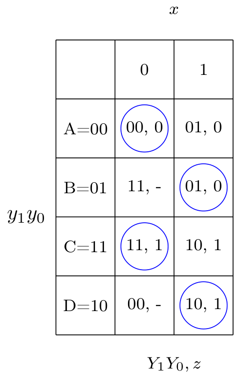
Definizione - Da tabella delle transizioni a espressioni combinatorie
La tabella delle transizioni può essere anche vista come la composizione di diverse tabelle della verità.
Ad esempio, alla seguente tabella corrispondono le seguenti tabelle della verità (o mappe di Karnaugh):
Ad esempio, alla seguente tabella
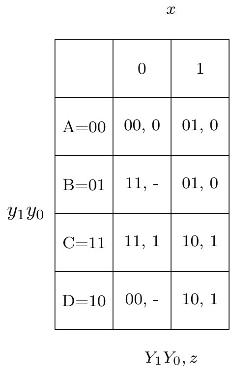
- per lo stato futuro \( Y_{1}\)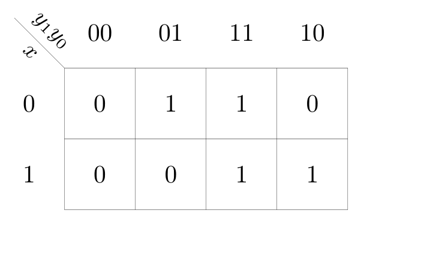
- per lo stato futuro \( Y_{0}\)
- per l'uscita \( z\)

Definizione - Funzionamento generale di una RSA
Le reti sequenziali asincrone funzionano "ad inseguimento degli ingressi" (esattamente come le reti combinatorie), si ha infatti che l'uscita e lo stato interno si modificano solo quando cambiano i segnali di ingresso (e non dipendono dalla durata degli ingressi). Per questo motivo esse sono soggette ad alee statiche e dinamiche che possono causare diversi problemi, in quanto potrebbero influenzare il calcolo dello stato futuro.
Affinchè una RSA funzioni correttamente nel passaggio da una condizione di stabilità all'altra (ovvero nel "funzionamento in modo fondamentale"), è necessario rispettare una serie di condizioni.
Affinchè una RSA funzioni correttamente nel passaggio da una condizione di stabilità all'altra (ovvero nel "funzionamento in modo fondamentale"), è necessario rispettare una serie di condizioni.
Definizione - Vincolo di funzionamento di una RSA - Durata degli ingressi
Come nelle reti combinatorie, anche nelle RSA esiste un limite alla velocità di funzionamento.
Considerando un tempo \( T_{G}\) di ritardo (calcolato come il ritardo massimo dei singoli bit in retroazione), si ha che ogni configurazione deve permanere almeno per \[ (1 + t) \cdot T_{G} \] dove \( t\) è il numero massimo di transizioni multiple necessarie per raggiungere uno stato stabile.
Nel caso quindi che non si abbiano transizioni multiple, si ha un caso base di \( 2 \cdot T_{G}\) (con \( t = 1\)).
Considerando un tempo \( T_{G}\) di ritardo (calcolato come il ritardo massimo dei singoli bit in retroazione), si ha che ogni configurazione deve permanere almeno per \[ (1 + t) \cdot T_{G} \] dove \( t\) è il numero massimo di transizioni multiple necessarie per raggiungere uno stato stabile.
Nel caso quindi che non si abbiano transizioni multiple, si ha un caso base di \( 2 \cdot T_{G}\) (con \( t = 1\)).
Definizione - Vincolo di funzionamento di una RSA - Codifica degli ingressi
Dato che le RSA funzionano ad inseguimento degli ingressi, si pongono i problemi legati alle alee statiche.
Condizione necessaria per evitare alee statiche è non variare più di un bit alla volta da una configurazione di ingressi ad un'altra.
Per questo motivo, si decide di "vietare" nell'uso (e quindi ignorare nella progettazione) tutte le configurazioni di ingresso che differiscono di più di un bit dalla condizione di stabilità.
Prendiamo per esempio il seguente grafo degli stati: Considerando i vincoli sulle configurazioni degli ingressi, si ottiene il seguente grafo  ovvero si sono eliminate tutte le configurazioni che differiscono di più di un bit dalla "configurazione di stabilità".
ovvero si sono eliminate tutte le configurazioni che differiscono di più di un bit dalla "configurazione di stabilità".
Condizione necessaria per evitare alee statiche è non variare più di un bit alla volta da una configurazione di ingressi ad un'altra.
Per questo motivo, si decide di "vietare" nell'uso (e quindi ignorare nella progettazione) tutte le configurazioni di ingresso che differiscono di più di un bit dalla condizione di stabilità.
Prendiamo per esempio il seguente grafo degli stati:
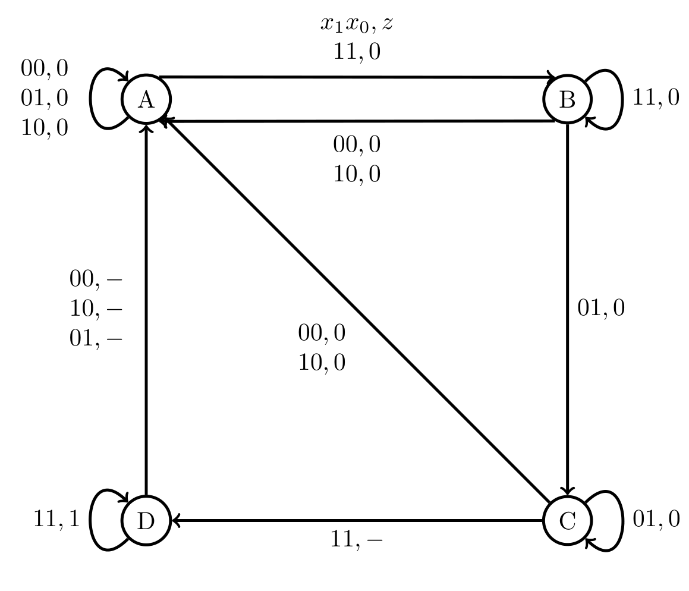
Definizione - Vincolo di funzionamento di una RSA - Evitare le alee statiche negli anelli di retroazione
Mentre per le reti combinatorie le alee statiche non risultano essere molto dannose, per le RSA sono invece un punto critico in quanto potrebbero portare a stati che "rompono" il "giusto flusso".
Si ha quindi che, oltre a rispettare il vincolo di variare un bit alla volta nelle configurazioni di ingresso, è necessario effettuare la sintesi delle reti che calcolano lo stato futuro raggruppando tutte le celle adiacenti (con lo stesso valore) in almeno un raggruppamento (sempre di dimensione massima), ovvero si devono considerare tutti gli implicanti (o implicati) primi.
Si ha quindi che, oltre a rispettare il vincolo di variare un bit alla volta nelle configurazioni di ingresso, è necessario effettuare la sintesi delle reti che calcolano lo stato futuro raggruppando tutte le celle adiacenti (con lo stesso valore) in almeno un raggruppamento (sempre di dimensione massima), ovvero si devono considerare tutti gli implicanti (o implicati) primi.
Definizione - Vincolo di funzionamento di una RSA - Codifica degli stati
Dato che i bit di stato presente risultano essere a tutti gli effetti degli ingressi per la rete, è necessario adottare vincoli simili a quelli adottati per le configurazioni di ingresso.
È necessario infatti che le configurazioni binarie associate ad ogni coppia (stato presente, stato futuro) siano adiacenti (ovvero devono variare di massimo un bit). Non è tuttavia sempre necessario adottare tale accorgimento (anche perchè sarebbe eccessivamente esoso in termini di bit utilizzati) ma solo per evitare le cosiddette "corse critiche".
È necessario infatti che le configurazioni binarie associate ad ogni coppia (stato presente, stato futuro) siano adiacenti (ovvero devono variare di massimo un bit). Non è tuttavia sempre necessario adottare tale accorgimento (anche perchè sarebbe eccessivamente esoso in termini di bit utilizzati) ma solo per evitare le cosiddette "corse critiche".
Definizione - Grafo delle adiacenze
Il grafo delle adiacenze è un formalismo grafico utile per codificare correttamente gli stati di una rete. Esso non è altro che una griglia con ai margini il codice di Gray (utile per evitare transizioni da uno stato all'altro in cui variano più di un bit) dove:
Ad esempio, un grafo che codifica \( 3\) bit di stato potrà essere così composto:
- ogni cella identificata da un codice è uno stato;
- da un nodo all'altro sono presenti degli archi orientati che indicano relazioni (stato presente, stato futuro).
Ad esempio, un grafo che codifica \( 3\) bit di stato potrà essere così composto:
Definizione - Corse critiche e non critiche
Quando si prevede che due segnali in retroazione devono modificarsi contemporaneamente (ovvero le due configurazioni non sono adiacenti) si dice che sono in "corsa".
Una corsa si definisce critica se è possibile raggiungere stati di stabilità diverse (in base a quale bit cambia per primo). Se ciò non avviene e la rete attraversa transizioni multiple fino a raggiungere la giusta stabilità, la corsa si definisce non critica.
Una corsa non critica non risulta essere un problema se: Si hanno corse critiche solo nei casi in cui una colonna della tabella di flusso contenga più di uno stato stabile (con un solo stato stabile, infatti, si avrebbero una serie di transizioni multiple che raggiungerebbero prima o poi lo stato stabile, in quanto non cambiano gli ingressi). Si può quindi procedere nel seguente modo per progettare correttamente le reti sequenziali. Data la tabella di flusso:
Una corsa si definisce critica se è possibile raggiungere stati di stabilità diverse (in base a quale bit cambia per primo). Se ciò non avviene e la rete attraversa transizioni multiple fino a raggiungere la giusta stabilità, la corsa si definisce non critica.
Una corsa non critica non risulta essere un problema se:
- durante la transizione l'uscita non varia;
- gli ingressi rimangono invariati fino al raggiungimento della stabilità.
Osservazioni personali - Ad esempio
Consideriamo ad esempio la seguente tabella delle transizioni in cui non si considera (per semplicità) l'uscita  Ipotizziamo di trovarci nello stato \( B=01\) con la configurazione di ingressi \( 01\). Nel caso fosse inserita la configurazione \( 11\) si avrebbe come stato futuro previsto \( D=10\) in cui variano entrambi i bit. Dato che si è detto che è impossibile che due bit cambino contemporaneamente, si potrebbero generare le seguenti situazioni:
Ipotizziamo di trovarci nello stato \( B=01\) con la configurazione di ingressi \( 01\). Nel caso fosse inserita la configurazione \( 11\) si avrebbe come stato futuro previsto \( D=10\) in cui variano entrambi i bit. Dato che si è detto che è impossibile che due bit cambino contemporaneamente, si potrebbero generare le seguenti situazioni:
Ipotizzando invece di trovarci nello stato \( C=11\) con la configurazione di ingressi \( 01\). Nel caso fosse inserita la configurazione \( 00\) si avrebbe come stato futuro previsto \( A=00\) in cui variano entrambi i bit. Dato che si è detto che è impossibile che due bit cambino contemporaneamente, si potrebbero generare le seguenti situazioni:
- varia prima il primo bit, ovvero si avrebbe come stato futuro lo stato \( C=11\) che prevede, con la configurazione di ingresso \( 11\) una stabilità nello stato \( C=11\);
- varia prima il secondo bit, ovvero si avrebbe come stato futuro lo stato \( A=00\) che prevede, con la configurazione di ingresso \( 11\) una stabilità nello stato \( A=00\).
Ipotizzando invece di trovarci nello stato \( C=11\) con la configurazione di ingressi \( 01\). Nel caso fosse inserita la configurazione \( 00\) si avrebbe come stato futuro previsto \( A=00\) in cui variano entrambi i bit. Dato che si è detto che è impossibile che due bit cambino contemporaneamente, si potrebbero generare le seguenti situazioni:
- varia prima il primo bit, ovvero si avrebbe come stato futuro lo stato \( B=01\) che prevede, con la configurazione di ingresso \( 00\) una transizione verso lo stato \( A=00\) (ovvero lo stato previsto);
- varia prima il secondo bit, ovvero si avrebbe come stato futuro lo stato \( D=10\) che prevede, con la configurazione di ingresso \( 00\) una transizione verso lo stato \( A=00\) (ovvero lo stato previsto).
- nelle colonne che presentano una sola stabilità e presentano delle indifferenze, si sostituiscono tutte le indifferenze con lo stato stabile per quella colonna. Ipotizzando quindi di avere la seguente tabella si sostituiscono le indifferenze con lo stato stabile per la colonna, ovvero
 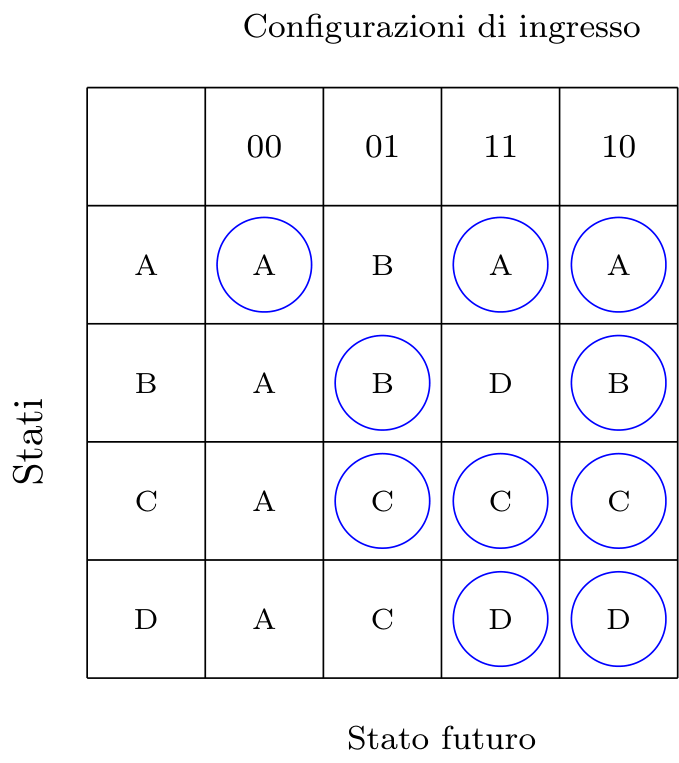
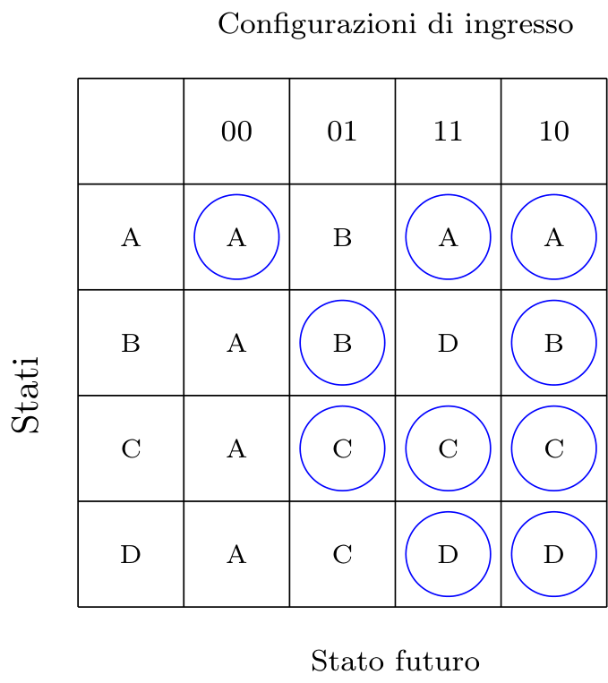 - per le colonne che presentano più di una stabilità si traccia un grafo delle adiacenze composto da \( 2^{n}\) celle, dove \( n\) è il numero minimo di bit per rappresentare gli stati, nel caso della precedente tabelle transizioni si avrebbe il seguente grafo

- nel caso esistano relazioni tra celle non adiacenti, è possibile spostare le celle fino a raggiungere un grafo corretto

- nel caso esistano "celle vuote" nel grafo delle adiacenze, è possibile sfruttarle per realizzare transizioni multiple;
- si verifica che le corse presenti siano "critiche": nel caso non lo siano la codifica è corretta, altrimenti si cerca di modificare la tabella di flusso sfruttando la stessa colonna del "collegamento" che crea problemi. Nel caso nella stessa colonna esiste uno stato che porta allo stato futuro desiderato (con gli stessi ingressi dato che ci stiamo concentrando sulla stessa colonna) si cerca di passare per questo stato. Ad esempio, ipotizzando di avere la seguente tabella di flusso: che equivale al seguente grafo
 si ha che nella colonna della cella che indica la transizione critica, ovvero
si ha che nella colonna della cella che indica la transizione critica, ovvero vi è anche lo stato \( A\) (che è adiacente allo stato \( B\)) che con la configurazione \( 11\) si "dirige" verso lo stato \( C\). È quindi possibile modificare la tabella di flusso ed il grafo delle adiacenze nel seguente modo: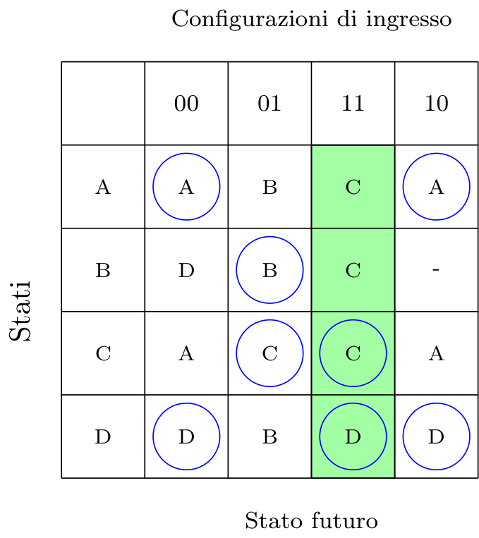che equivale a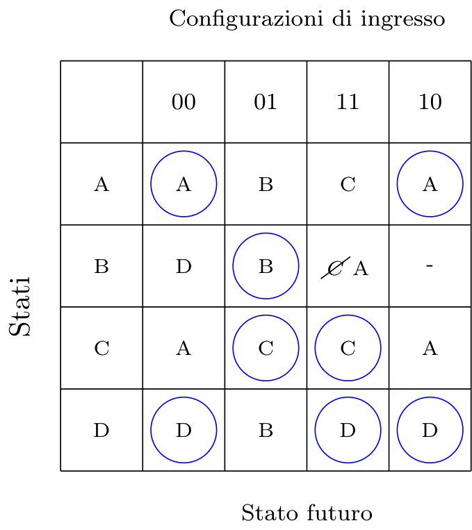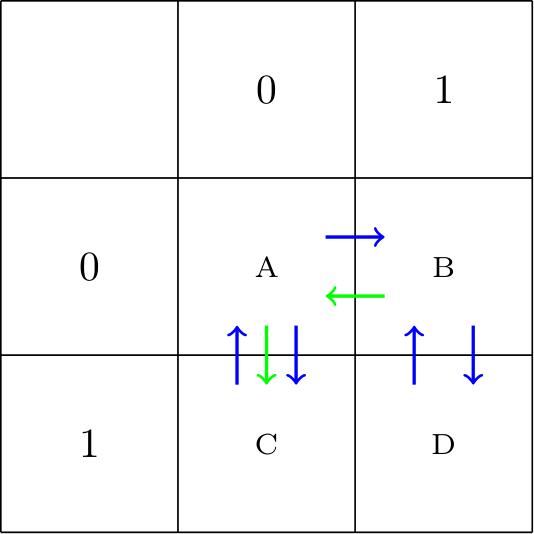
vi è anche lo stato \( A\) (che è adiacente allo stato \( B\)) che con la configurazione \( 11\) si "dirige" verso lo stato \( C\). È quindi possibile modificare la tabella di flusso ed il grafo delle adiacenze nel seguente modo: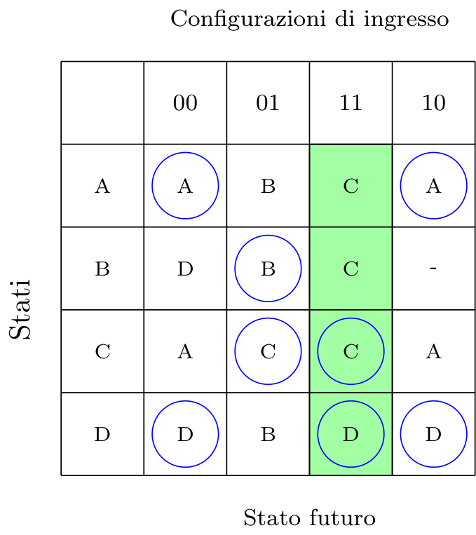che equivale a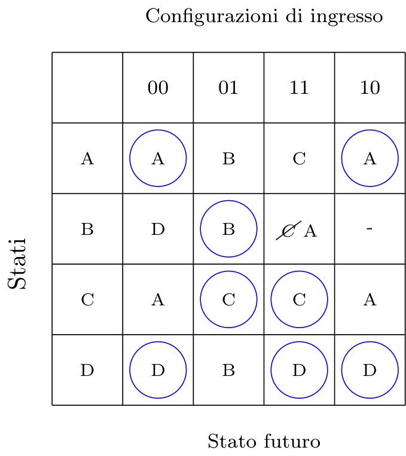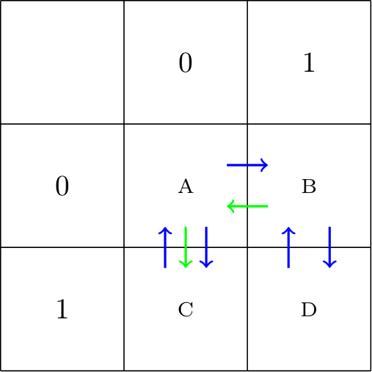 - nel caso il grafo non sia ancora corretto, si aggiunge un bit per codificare lo stato.